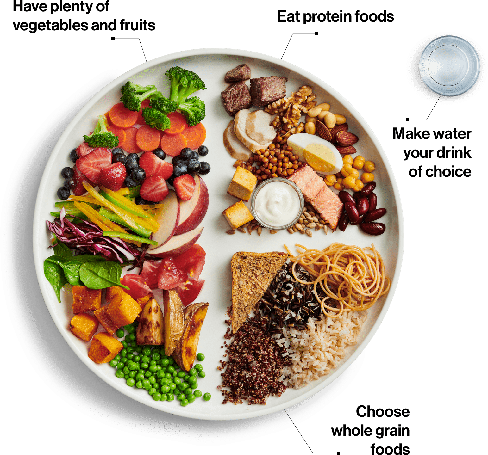

1. Try Intermittent Fasting

Intermittent fasting involves keeping your meals within a specific 8 to 10-hour window each day, allowing your body more time to burn calories. It may help you eat less and feel more energized.
- Choose an eating window, such as 8:00 am to 4:00 pm.
- Eat meals during your most active hours.
- Give your body plenty of time to rest and digest.
2. Exercise Regularly

Dedicate 30 minutes to physical exercise for a healthier body and a fresh mind.
Learn More3. Diet Plan
| Time | Weight Loss Plan |
|---|---|
| 9:00 AM | Warm Lemon Water or Coconut Water |
| 11:00 AM | Fresh Fruit Smoothie or Seasonal Fruits |
| 1:00 PM | Whole Grain Salad or Steamed Vegetables |
| 4:00 PM | Coconut Water or Green Tea |
| 7:00 PM | Vegetable Soup or Mixed Green Salad |
4. Fill Your Plate Half-Full of Vegetables & Fruits
Vegetables and fruits are loaded with nutrients and fiber, and they’re lower in calories than most other foods. Fill half of your plate with 1 to 2 servings of vegetables or fruits at each meal to fill up faster and stay full longer.
- Steam, stir-fry, roast, or boil your vegetables.
- Include raw vegetables or a side salad if you don't want to cook.
- Opt for fresh whole fruits like apples or bananas when you're in a hurry.
5. Don't Eat Processed Foods
Limiting highly processed foods is essential to a healthy eating pattern. Processed foods often contain high levels of sodium, sugars, and unhealthy fats.
Examples of Processed Foods
- Sugary Drinks
- Potato Chips & Pretzels
- Ice Cream & Frozen Desserts
- Processed Meats
Benefits of Limiting Processed Foods
- Reduced Sodium Intake
- Lower Risk of Obesity & Diabetes
- Improved Heart Health
- Better Overall Nutrition
Tip: Replace sugary drinks with water, avoid processed meats, and choose whole, fresh foods as often as possible.